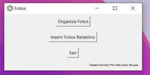

Automação de preenchimento e inserção de fotos.
Problema de negócio:
Necessário enviar um relatório fotográfico para o cliente
O serviço consiste em fiscais da empresa ir em campo, fazerem alguns registros de fiscalização das obras e ao término das fiscalizações, há a necessiade de inserir as fotos em
um relatório fotográfico para envio ao cliente.
Planejamento:
Criei vba para fazer a inserção de foto por foto, setando para foto ficar centralizada dentro do espaço em que ela será inserida.
Utilizando a biblioteca pyautogui, que simula comandos do teclado, como as fotos são divididas em grupo de 03, criei um padrão para preenchimento utilizando as setas do teclado e alt+f8 para chamar o vba.
Construção:
-
A partir daí, usei a engenharia de prompt com ChatGPT para montar o código, O usuário abre o arquivo xlsm, seleciona no primeiro quadro de foto, presionando alt+f8, seleciona a pasta com as fotos organizadas, inserie uma foto e depois deleta a mesma do relatório, então abre o arquivo Relatorio_fotos.pyw:
-
Janlea principal, o usuário escolhe se quer organizar as fotos por ordem numérica ou inserir as fotos no relatório fotográfico:

- Quantas fotos serão inseridas
- Qual o caminho do arquivo Fotos.xlsm
- Qual o caminho da pasta com as fotos organiadas por nome
-
Janela inserir fotos relatório, o usuário precisa informar:
A partir daí, o programa faz as inserções das fotos.
Demonstração
-
Nessa demonstração foram usadas fotos públicas do site: https://pixabay.com/ para demonstrar como é feito todo o processo da automação.
Para um cenário de poucas fotos como na demonstração, talvez aparenta não fazer sentido passar por todas essas etapas para a ferramenta fazer a inserção das fotos, mas em um cenário onde as vezes é necessário inserir 300, 500 ou 600 fotos, a ferramenta ajuda muito pois, o relatório é preenchido em minutos, agilizando uma parte importante do dia do usuário.